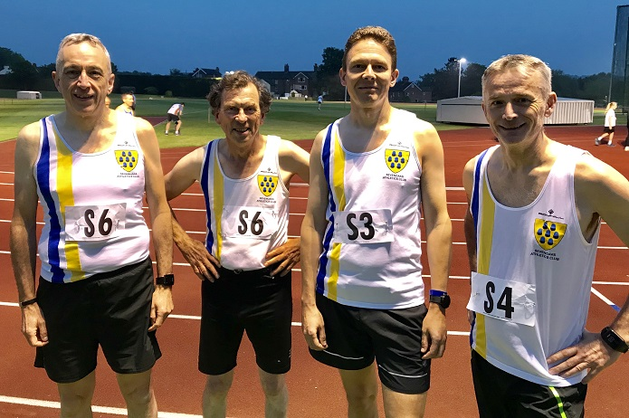

Both the SAC women and men lie third in their divisions after the second match of the SCVAC track and field league on Friday 25th May. Highlights were Pauline Dalton's win in the W50 100m and Sylvia Lewis' victory in the W60 Javelin
The second meeting of the Southern Counties Veterans Athletics league Kent Division was a great success for Sevenoaks Athletics Club, adds Grazia Manzotti.
Let's start with the ladies. The ladies for the first time for SAC had a full team and we finished in second place! Jenny Austin was third in the 100m, with a fine time of 19.8 secs, and third in the 800m. Sylvia Lewis was first in the W60 javelin with a W65 club best performance of 6.97m (ranking her currently 10th in the UK), and, even though she ended up in the wrong race for the 100m, she was second M60 over that distance, and third in the W35B 800m in 4:20.5, another club best performance! Nicki Thompson was second in both shot put and the javelin, only 1cm short of the club best performance in the latter (and 22nd in this year's W40 UK rankings)! Pauline Dalton continues to set club bests. She was first in the W50 100m in 18.3 secs, no SAC W50 has been faster, and second in the 800m, taking nearly 11 seconds off the club's previous W50 best performance. And this was after a 5km race earlier in the day! The ladies team was also second in the relay and their time ranks as a club 4 x 100m W40 club best, so every member of the team achieved at least one club best performance. Amazing success for the ladies and they also said it was good fun!
The men did great, too, filling every event on the programme.
Neil Haggertay made his debut as fourth in the M35B 100m, and fifth in the 800m against tough competitors. He did also the shot put, against the background of last call for the relay, and was fourth – - in all, a total of 11 individual points for the club. Graham Dwyer also joined the team for the first time and was fourth in the M35A 100m, our fastest man on the night. He also achieved fourth place in the 800m and sixth in the javelin.
Geoffrey Kitchener was fourth in the M35 high jump, a tactical age category allocation to maximise the points of Rob Peers, who jumped in the M50 event, and secured second place with 1.25m. Geoffrey was also third in the M60 100m. Duncan Cochrane ran in the M50 100m for sixth place and also achieved fifth in the M50 800m and third in the M60 shot putt. Keith Dowson was second in the M50 shot putt and fourth in the javelin, worth 25th place in the current UK rankings. A relay team of Neil, Graham, Duncan and Geoffrey (pictured below) brought the baton home in fourth place, which was also the men's overall position on the night, although we are lying third in the series so far. So, this was a solid performance from the men to add to the ladies' success.
The next meet will be on 15th June in Friday 15th June at Bromley. There will be a call for teams nearer the date.
The full results are here.
